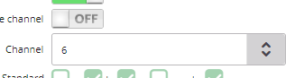

En cualquiera de los dos escenarios, indicarle al cliente que desconecte y conecte el router, esperar que luces enciendan
Hacer un Test de Velocidad
1. De ser posible via cable desde un computador
2. Indicarle que desconecte todos los dispositivo, incluyendo repetidores y dejar solo un equipo conectado (el que va a realizar las pruebas).
3. Si esta via wifi, Acercarse lo mas cerca al router y verificar en UMP si cuenta con red 5G, verificar si esta activa
4. Si tiene red 5G, indicarle que se conecte (la red 2.4 Soporta hasta 50 Megas)
5. Luego indicar que ingrese a esta pagina web: https://www.speedtest.net/
6. Una vez realice el test de velocidad, revisar si tiene la velocidad correcta
7. Debes tener en cuenta que por Wifi no llegara de manera completa la velocidad, pero si un aproximado. por ejemplo: si el cliente tiene 100 megas contratados, el test debe marcar minimo 95-98 megas
Si tiene la velocidad contratada:
Soporte Efectivo - tipifica: Reclamo ▶ Averia ▶ Internet DSL MSAN ▶ Lentitud en el servicio ▶ Prueba de Velocidad, Servicio OK
Accion a tomar:
1. Ingresa a UMP, actualiza tres veces.
2. Cambia Canal de Datos.

3. Guarda los cambios.
4. Refresca nuevamente UMP.
5. Pedir Nuevamente el TEST.
Si tiene la velocidad contratada:
Soporte Efectivo - tipifica: Reclamo ▶ Averia ▶ Internet DSL MSAN ▶ Lentitud en el servicio ▶ Prueba de Velocidad, Servicio OK
Si No tiene velocidad contratada
Generar Averia a TGE, En pruebas colocar todas las pruebas que se realizaron, tipificar como: Reclamos ▶ Avería ▶ Internet DSL / MSAN ▶ Lentitud en el servicio ▶ Se genera Averia
Realiza PING a Google
▶ Preguntar si esta conectado via LAN o WIFI
▶ Si es via cable, indicale al cliente que vas a realizar pruebas desde el computador
▶ Sigue los pasos de la imagen
×
Ping Via Wifi
1. Indicarle al cliente que descarge una APP llamada PING
2. Cuando termine de descargar, que abra la APP
3. Una Vez Ingresada, Que elimine el 8.8.8.8 y en ese mismo espacio coloque: www.google.com, tal como aparece aqui:
Generar Averia a TGE, En pruebas colocar todas las pruebas que se realizaron, tipificar como: Reclamos > Avería > Internet DSL / MSAN > Inestabilidad > Se genera Averia
Generar Averia a TGE, En pruebas colocar todas las pruebas que se realizaron, tipificar como: Reclamos > Avería > Internet DSL / MSAN > Inestabilidad > Se genera Averia